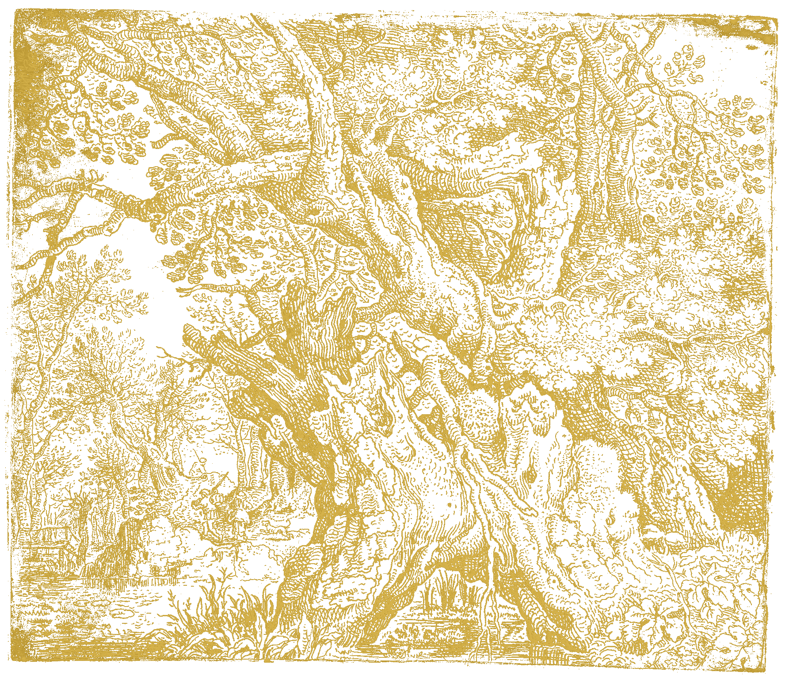

Imperator · 万王之王 LOYAL
帝皇
God-Emperor of Mankind
人类帝国之主，万年以来坐于黄金王座之上，以残存之意志维系星炬，庇佑亚空间航行。 帝皇之躯已朽，帝皇之神愈炽——Imperator Regit。
"宁可帝皇殒落，不可帝国倾覆。"
点击查阅档案✠
"In the grim darkness of the far future, there is only war."
四重卷宗 · 从人物到银河 · 从历史到终端
帝国历 M41–M42，编年史官遴选之要员档案
人类帝国之主，万年以来坐于黄金王座之上，以残存之意志维系星炬，庇佑亚空间航行。 帝皇之躯已朽，帝皇之神愈炽——Imperator Regit。
"宁可帝皇殒落，不可帝国倾覆。"
极限战士基因原体，大叛乱后沉睡万年，于第41千年之末被灵族所救而回归。 现为帝国摄政，以理性与军略重建支离破碎的帝国，发起不屈远征， Indomitus Crusade。
"我们以理性御敌，以纪律立国。"
卡利班之子，暗黑天使基因原体。大叛乱期间隐没于亚空间迷宫，于第42千年初回归， 亲手了结堕天使之患与方舟世界的威胁。猎人终归群星之间。
"卡利班之上，唯我持剑。"
巴尔之子，帝皇子嗣中最完美者，背负死亡预知的天使之翼。 泰拉围城一役独战荷鲁斯，以天使之血铸就帝国最后的悲壮。
"我见过我的死亡千次，它从不改变——所以我从不回头。"
机械教万年大贤者，行走的禁忌档案馆。复活基里曼，铸造原铸星际战士—— 忠诚与异端之间，只隔一道数据链。
"记忆可以重写，数据从不撒谎。"
芬里斯之子，维京之王，帝皇亲封的处刑者。焚毁普罗斯佩罗， 其后携狼群遁入亚空间——传说他仍将在帝国最危难时归来。
"芬里斯的狼群永不低头。"
美杜莎之子，铁手如银，意志如钢。伊斯塔万五号之役率忠诚派登陆， 与叛徒福根决斗，死于挚友之剑——钢铁之手的挽歌。
"铁，比血肉更诚实。"
努塞里亚的奴隶角斗士，屠夫之钉永驻头颅，愤怒是唯一的语言。 叛变后升魔为恐虐恶魔亲王，化身为纯粹的毁灭。
"血祭血神，颅献颅座！"
奥利姆匹亚的工程师，被忽视的筑城者与破城者。以数学与炮火 衡量一切，泰拉围城的攻城大师，终堕混沌升魔。
"每一道城墙，都值得被攻破。"
影月苍狼基因原体，帝国战帅，受混沌四神蛊惑而叛，点燃荷鲁斯之乱。 泰拉围城一役为帝皇所诛，帝国自此破碎，永无宁日。
"我本可拯救一切，如今唯余毁灭。"
凯莫斯之子，追求完美至极致，终为色孽之剑所蚀。 弑兄叛国，升魔为混沌亲王——完美的终点，是毁灭的第一步。
"完美不是终点，而是毁灭的第一步。"
普罗斯佩罗之子，红肤独眼，最强灵能原体。以忠诚犯下大错， 普罗斯佩罗焚毁之夜，千子尽殁，他堕入奸奇。
"我以忠诚之名犯下大错，以真理之名堕入谎言。"
拖动星图 · 滚轮缩放 · 悬停光点查看区域大事 · 点击光点查阅相关档案
帝国为主干 · 混沌与科技为枝 · 原体为芽 · 从黄金时代生长至第 42 千年

外部设备上传数据之实时收报 · 圣典数据流
GET /api/data 拉取 · POST /api/upload 上报（JSON）
// 页面轮询拉取上报数据（默认 15s） { "records": [ { "ts": "2026-08-01T12:00:00Z", "source": "esp32-01", "type": "telemetry", "message": "TEMP 28.4°C" } ] }
// 外部设备（ESP32/STM32 等）上报 Content-Type: application/json { "source": "esp32-01", "type": "telemetry", "message": "TEMP 28.4°C" }
// 修改下方 API_BASE 指向你的后端即可， // 无后端时页面自动使用内置演示数据。 const API_BASE = ""; // 如 "http://192.168.1.10:8080"